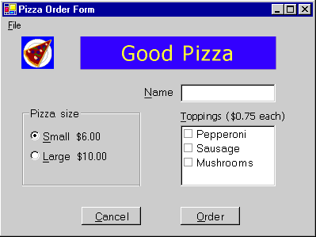

Пошаговое руководство. Создание приложения Windows с поддержкой специальных возможностей
Создание приложений со специальными возможностями необходимо по деловым соображениям. Во многих странах для продаваемого программного обеспечения существуют правительственные требования в отношении специальных возможностей. Логотип "Сертифицировано для Windows" предполагает соответствие продукта требованиям в отношении специальных возможностей. По предварительным оценкам, только в США 30 миллионов пользователей нуждаются в программном обеспечении со специальными возможностями. Многие из них являются потенциальными клиентами.
В этом пошаговом руководстве рассматриваются пять требований в отношении специальных возможностей, выполнение которых необходимо для использования эмблемы "Сертифицировано для Windows". Согласно этим требованиям в приложении со специальными возможностями обеспечиваются:
поддержка настройки размера, цвета, шрифта и параметров ввода с панели управления; изменение размеров строк меню, строк заголовков, границ и строки состояния при изменении соответствующих параметров на панели управления (дополнительные изменения элементов управления или кода в приложении не требуются);
поддержка режима высокой контрастности;
документированный доступ с клавиатуры ко всем возможностям;
наглядное и программное представление фокуса клавиатуры;
предоставление важной информации не только с помощью звукового сигнала.
Подробнее см. в разделе Ресурсы для создания приложений со специальными возможностями.
Информацию о поддержке различных раскладок клавиатуры см. в разделе Рекомендации по разработке международных приложений.
Создание проекта
В этом пошаговом руководстве создается пользовательский интерфейс для приложения, принимающего заказы на пиццу. Оно содержит поле (TextBox) для имени заказчика, группу переключателей (RadioButton) для выбора размера пиццы, флажки (CheckedListBox) для выбора начинки, две кнопки с надписями "Заказать" и "Отмена", а также меню с командой "Выход".
Пользователь вводит имя заказчика, размер пиццы и выбранную начинку. Когда пользователь нажимает кнопку "Заказать", сводка заказа и его цена выводятся в окне сообщения, а элементы управления очищаются и становятся готовыми к приему следующего заказа. Когда пользователь нажимает кнопку "Отмена", элементы управления очищаются и становятся готовыми к приему следующего заказа. Когда пользователь выбирает в меню команду "Выход", программа закрывается.
Основное внимание в этом пошаговом руководстве уделяется не коду для системы розничной продажи, а специальным возможностям пользовательского интерфейса. В примере демонстрируются специальные возможности для некоторых часто используемых элементов управления, таких как кнопки, переключатели, поля и метки.
Начало разработки приложения
- Создайте новое приложение Windows в Visual Basic или Visual C#. Назовите проект PizzaOrder. (Подробнее см. в разделе Создание решений и проектов.)
Добавление элементов управления в форму
При добавлении элементов управления в форму придерживайтесь приведенных ниже правил для того, чтобы приложение было доступным для пользователей с физическими ограничениями.
Задайте свойства AccessibleDescription и AccessibleName. В этом примере для свойства AccessibleRole достаточным является значение Default. Подробнее о свойствах специальных возможностей см. в разделе Определение сведений, связанных со специальными возможностями, для элементов управления в Windows Forms.
Задайте размер шрифта 10 пунктов или выше.
Note
Если задать для формы размер шрифта 10 в начале работы, то все элементы управления, добавляемые в форму после этого, также будут иметь размер шрифта 10.
Убедитесь в том, что любой элемент управления Label, относящийся к элементу TextBox, непосредственно предшествует элементу TextBox в последовательности табуляции.
Добавьте клавишу доступа, с помощью символа «&», в Text свойства любого элемента управления, пользователь может потребоваться перейти.
Добавьте клавишу доступа, с помощью символа «&», в Text метки, которая предшествует элементу управления, который пользователь может потребоваться перейти. Задайте для свойства UseMnemonic метки значение
true, чтобы при нажатии клавиши доступа фокус переводился на следующий элемент управления в последовательности табуляции.Добавьте клавиши доступа для всех элементов меню.
Обеспечение специальных возможностей приложения Windows
Добавьте в форму элементы управления и задайте их свойства, как описано ниже. Модель размещения элементов управления в форме см. на рисунке после таблицы.
Object Свойство. Значение Form1 AccessibleDescription Форма заказа AccessibleName Форма заказа Размер шрифта 10 Текста Форма заказа пиццы PictureBox name logo AccessibleDescription Порция пиццы AccessibleName Логотип компании Изображение Любой значок или растровое изображение Метка name companyLabel Текста Вкусная пицца TabIndex 1 AccessibleDescription Название компании AccessibleName Название компании Backcolor Синий Forecolor Желтый Font size 18 Метка name customerLabel Текста &Имя TabIndex 2 AccessibleDescription Подпись имени заказчика AccessibleName Подпись имени заказчика UseMnemonic True TextBox name customerName Текста (нет) TabIndex 3 AccessibleDescription Имя заказчика AccessibleName Имя заказчика GroupBox name sizeOptions AccessibleDescription Размеры порции пиццы AccessibleName Размеры порции пиццы Текста Размер пиццы TabIndex 4 RadioButton name smallPizza Текста &Маленькая 300 р. Установлен True TabIndex 0 AccessibleDescription Маленькая пицца AccessibleName Маленькая пицца RadioButton name largePizza Текста &Большая 500 р. TabIndex 1 AccessibleDescription Большая пицца AccessibleName Большая пицца Метка name toppingsLabel Текста &Начинки (40 р. за каждую) TabIndex 5 AccessibleDescription Метка начинки AccessibleName Метка начинки UseMnemonic True CheckedListBox name toppings TabIndex 6 AccessibleDescription Выбор начинок AccessibleName Выбор начинок Элементы Пепперони, колбаса, грибы Кнопка name порядок Текста &Порядок TabIndex 7 AccessibleDescription Сумма заказа AccessibleName Сумма заказа Кнопка name cancel Текста О&тмена TabIndex 8 AccessibleDescription Отмена заказа AccessibleName Отмена заказа MainMenu name theMainMenu MenuItem name fileCommands Текста &Файл MenuItem name exitApp Текста Вы&ход Форма будет выглядеть примерно как на следующем изображении:

Поддержка режима высокой контрастности
Режим высокой контрастности представляет собой тип системной настройки Windows, при которой удобство чтения текста повышается за счет более контрастных цветов и размеров шрифта, подходящих для пользователей с нарушениями зрения. HighContrast Свойство позволяет определить, установлен ли режим высокой контрастности.
Если свойство SystemInformation.HighContrast имеет значение true, то в приложении происходит следующее:
Все элементы пользовательского интерфейса отображаются с использованием системной цветовой схемы.
Любая информация, передающаяся цветом, также передается с помощью визуальных или звуковых сигналов. Например, если определенный элемент списка выделен красным шрифтом, можно также отобразить его полужирным шрифтом, чтобы пользователь, не различающий цвета, видел, что элемент выделен.
Опускаются все рисунки или узоры за текстом.
Приложение должно проверять значение свойства HighContrast при запуске и отвечать на системное событие UserPreferenceChanged. При изменении значения свойства HighContrast происходит событие UserPreferenceChanged.
В этом примере единственным элементом, не использующим системные параметры цвета, является lblCompanyName. SystemColors Класс используется для замены параметров цвета метки на выбранные пользователем системные цвета.
Эффективный способ обеспечения высокой контрастности
Создайте метод, задающий для метки системные цвета.
' Visual Basic Private Sub SetColorScheme() If SystemInformation.HighContrast Then companyLabel.BackColor = SystemColors.Window companyLabel.ForeColor = SystemColors.WindowText Else companyLabel.BackColor = Color.Blue companyLabel.ForeColor = Color.Yellow End If End Sub // C# private void SetColorScheme() { if (SystemInformation.HighContrast) { companyLabel.BackColor = SystemColors.Window; companyLabel.ForeColor = SystemColors.WindowText; } else { companyLabel.BackColor = Color.Blue; companyLabel.ForeColor = Color.Yellow; } }Вызовите процедуру
SetColorSchemeв конструкторе форм (Public Sub New()в Visual Basic;public class Form1в Visual C#). Чтобы получить доступ к конструктору в Visual Basic, необходимо развернуть область с меткой Код, автоматически созданный конструктором форм Windows.' Visual Basic Public Sub New() MyBase.New() InitializeComponent() SetColorScheme() End Sub // C# public Form1() { InitializeComponent(); SetColorScheme(); }Создайте процедуру обработки события с соответствующей подписью для реагирования на событие UserPreferenceChanged.
' Visual Basic Protected Sub UserPreferenceChanged(ByVal sender As Object, _ ByVal e As Microsoft.Win32.UserPreferenceChangedEventArgs) SetColorScheme() End Sub // C# public void UserPreferenceChanged(object sender, Microsoft.Win32.UserPreferenceChangedEventArgs e) { SetColorScheme(); }Добавьте код в конструктор форм после вызова метода
InitializeComponents, чтобы подключить процедуру обработки событий к системному событию. Этот метод вызывает процедуруSetColorScheme.' Visual Basic Public Sub New() MyBase.New() InitializeComponent() SetColorScheme() AddHandler Microsoft.Win32.SystemEvents.UserPreferenceChanged, _ AddressOf Me.UserPreferenceChanged End Sub // C# public Form1() { InitializeComponent(); SetColorScheme(); Microsoft.Win32.SystemEvents.UserPreferenceChanged += new Microsoft.Win32.UserPreferenceChangedEventHandler( this.UserPreferenceChanged); }Добавьте код в метод Dispose формы перед вызовом метода Dispose базового класса, чтобы освободить событие при закрытии приложения. Чтобы получить доступ к методу Dispose в Visual Basic, необходимо развернуть область "Код, автоматически созданный конструктором форм Windows".
Note
Код системного события выполняется в потоке, отдельном от основного приложения. Если не освободить событие, то код, связанный с событием, будет выполняться даже после закрытия программы.
' Visual Basic Protected Overloads Overrides Sub Dispose(ByVal disposing As Boolean) If disposing Then If Not (components Is Nothing) Then components.Dispose() End If End If RemoveHandler Microsoft.Win32.SystemEvents.UserPreferenceChanged, _ AddressOf Me.UserPreferenceChanged MyBase.Dispose(disposing) End Sub // C# protected override void Dispose( bool disposing ) { if( disposing ) { if (components != null) { components.Dispose(); } } Microsoft.Win32.SystemEvents.UserPreferenceChanged -= new Microsoft.Win32.UserPreferenceChangedEventHandler( this.UserPreferenceChanged); base.Dispose( disposing ); }Нажмите клавишу F5 для запуска приложения.
Передача важной информации способами помимо звукового сигнала
В этом приложении никакая информация не предоставляется только с помощью звукового сигнала. Если вы используете звук в своем приложении, следует также предусмотреть альтернативные способы передачи информации.
Обеспечение передачи важной информации способами помимо звукового сигнала
Сделайте строку заголовка мигающей с помощью функции FlashWindow интерфейса Windows API. Пример вызова функций Windows API, см. в разделе Пошаговое руководство: Вызов Windows API.
Note
У пользователя может быть включена служба визуального оповещения Windows, что также приведет к миганию окна при подаче системных звуковых сигналов через встроенные динамики компьютера.
Выводите важную информацию в немодальном окне, чтобы пользователь мог реагировать на нее.
При выводе окна сообщения передавайте ему фокус клавиатуры. Этот способ не следует применять в момент, когда пользователь может осуществлять ввод с клавиатуры.
Выводите индикатор состояния в области уведомлений о состоянии панели задач. Подробнее см. в разделе Практическое руководство. Добавление значков приложения на панель задач с помощью компонента NotifyIcon в Windows Forms.
Тестирование приложения
Перед развертыванием приложения необходимо протестировать реализованные специальные возможности.
Тестирование специальных возможностей
Для проверки доступа с клавиатуры отключите мышь и перейдите к каждому элемента пользовательского интерфейса, используя только клавиатуру. Убедитесь в том, что все задачи можно выполнить с помощью клавиатуры.
Для проверки режима высокой контрастности используйте компонент "Специальные возможности" на панели управления. Выберите вкладку "Экран" и установите флажок "Высокая контрастность". Перейдите по всем элементам управления и убедитесь в том, что отражаются изменения цвета и шрифта. Кроме того, убедитесь в том, что отсутствуют рисунки или узоры под текстом.
Note
В Windows NT 4 значок "Специальные возможности" на панели управления отсутствует. Поэтому этот способ изменения значения свойства SystemInformation.HighContrast не работает в Windows NT 4.
Доступны также другие средства тестирования специальных возможностей приложения.
Для тестирования демонстрации фокуса клавиатуры запустите экранную лупу. (Для этого нажмите кнопку Пуск, выберите Программы, Стандартные, Специальные возможности, а затем щелкните Экранная лупа.) Выполните переходы по интерфейсу пользователя, используя клавишу TAB и мышь. Убедитесь в том, что все переходы правильно отображаются экранной лупой.
Для проверки отображения элементов экрана запустите программу Inspect и перейдите к каждому элементу с помощью мыши и клавиши TAB. Убедитесь в том, что сведения, выводящиеся в полях "Name", "State", "Role", "Location" и "Value" окна программы Inspect для каждого объекта в интерфейсе являются полезными для пользователя.